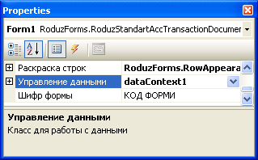
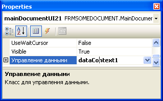
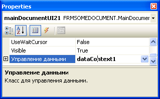

Как передавать данные между классами (компонентами)
Для передачи данных между разными компонентами (классами) на форме можна использовать:
- Свойства
- Методы
- События
Связь через свойства и методы, это прямая связь, тоесть передача осуществляется из класса родителя в дочерний класс. Примером передачи через свойства является класс DataContext, который устанавливается на основную (родительскую) форму и через свойства устанавливается всем дочерним подформам. (рис. 1)
 

Рисунок 1. Установка контекста данных всем дочерним элементам формы и самой форме.
Передача через события это вариант обратной связи, тоесть передача идет из дочернего класса в родительский. Например, сообщение о изменении в данных передаются из контекста данных в основную форму. Основная форма подписывается на событие, а дочерняя форма информирует подписчиков. Дополнительная информация о свойствах, событиях.